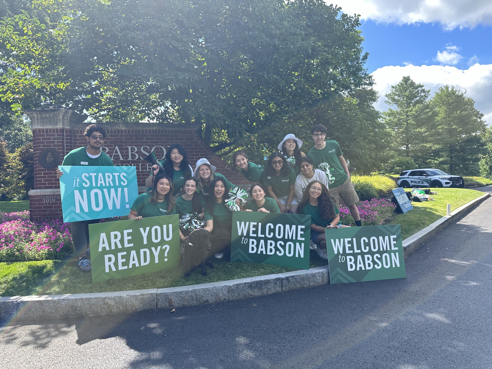
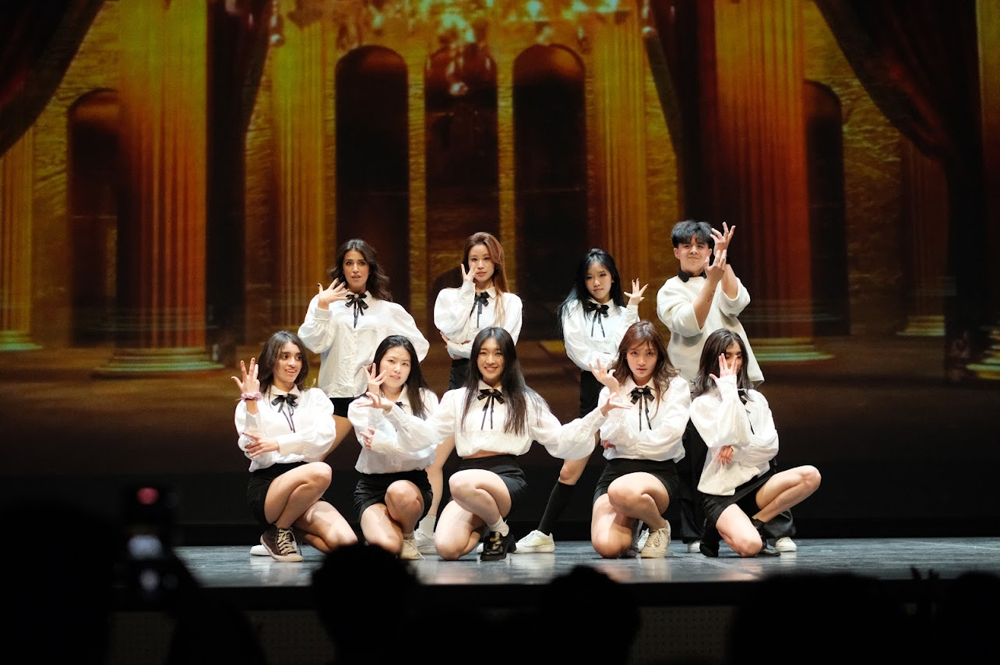
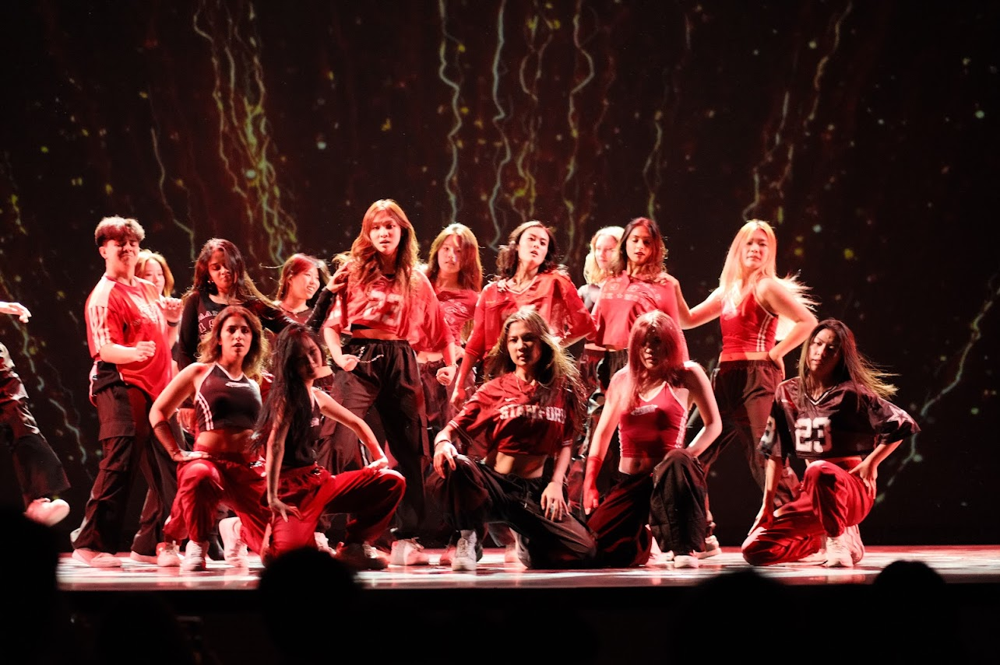
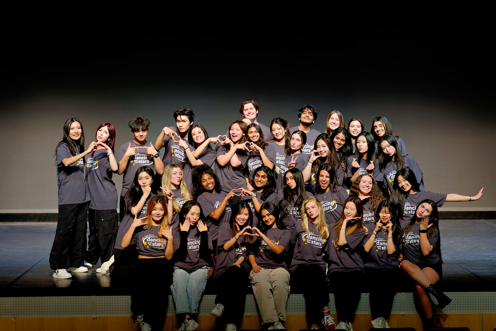
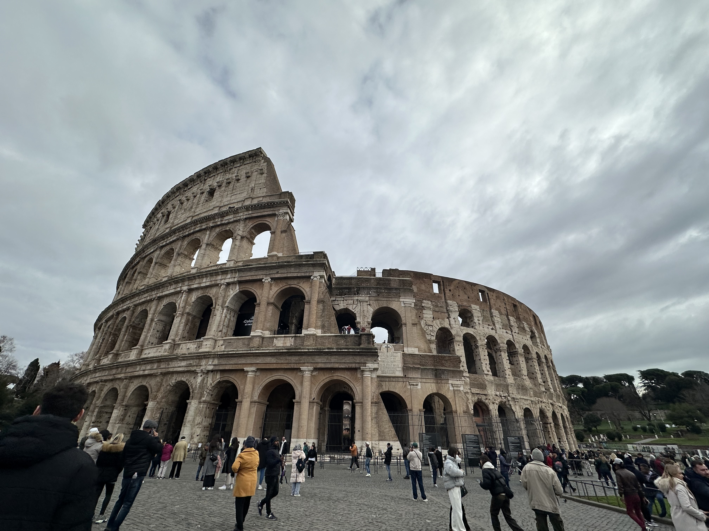
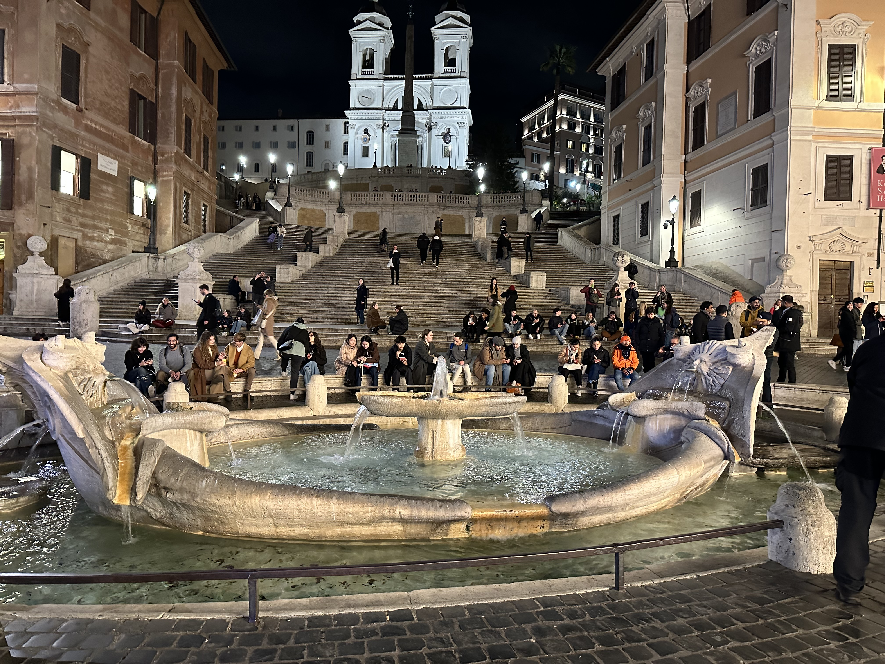
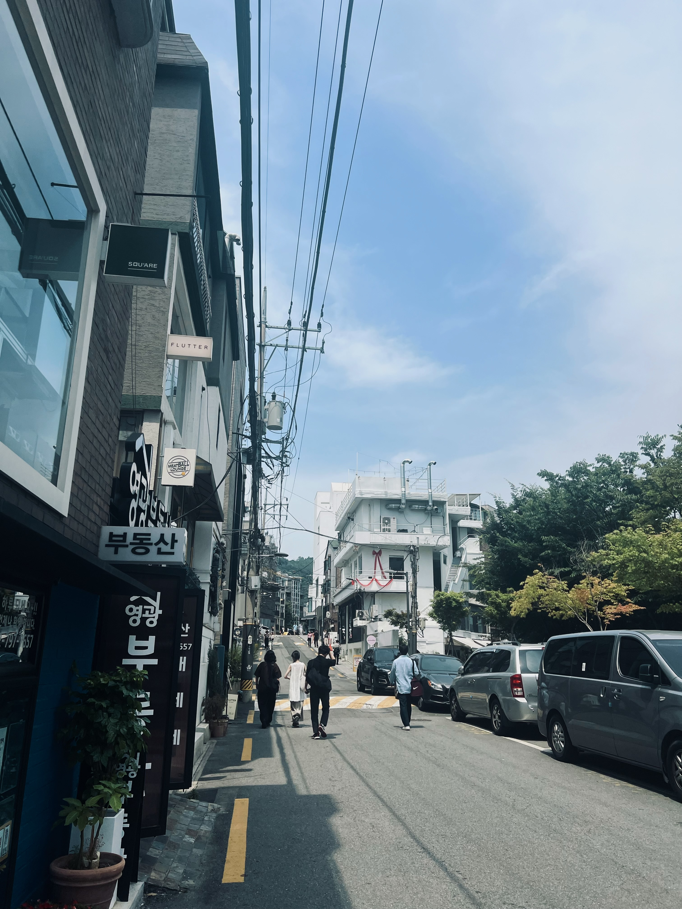

Project 1 - Peer Mentor
I was working as a Peer Mentor of First-Year students in college. It was a great experience to become a student leader that help new college students get familiar with Babson College. Through this experience, I see the importance of role of Peer Mentor because we can use our own college experience and life experience to advice new students how to become successful and at the same time have a great college life!


To know more about this position role, and have an interest in applying for other positions, click here to get more information!
Project 2 - Babson Dance Ensemble
In Babson College, I am part of Babson Dance Ensemble. We will operate a dance show around the end of every semester. I'm having a very fun time when dancing. Also, I was able to learn different types of dances such as grooving hiphop and contemporary.Here are some pictures of the show I participated.
  If you want to see more, feel free to check here, and find more videos on their instagram page.
Project 3 - Travelling
Within college years, I have travelled to different countries and explored many different cultures and landscapes. FOr example, Korea, Bahamas, and Italy. Those travelling experiences offered me a broader view of the world. Here are some pictures I took during trips.
  